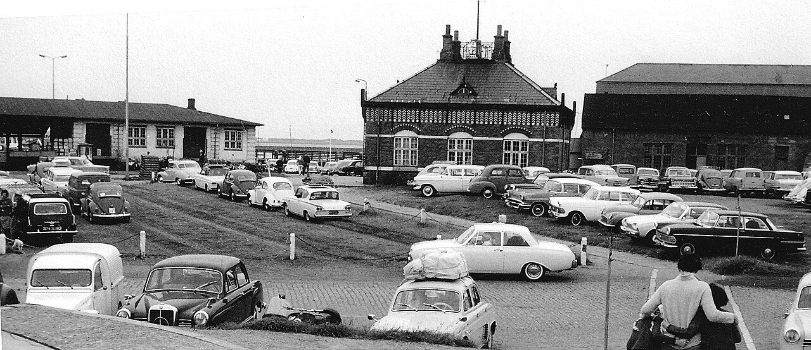
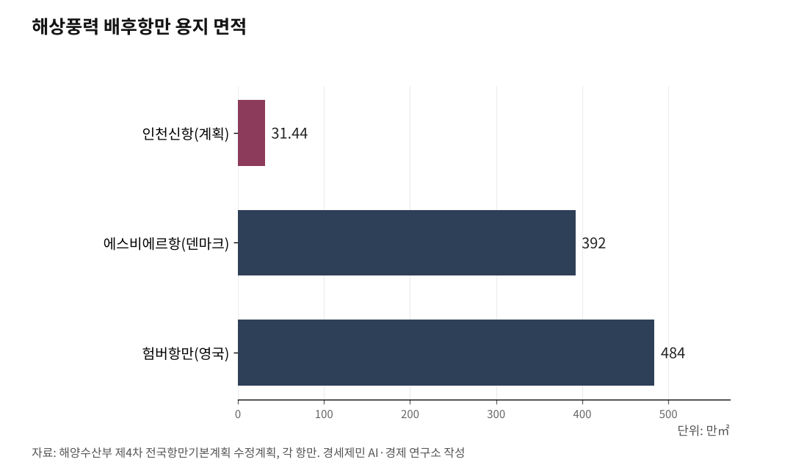

[인천 해양산업, 생존기로 ③] 7GW 배후항만, 10만평 되겠나... 에스비에르의 8분의 1
인천신항 해상풍력 부두 확정됐지만 면적 턱없이 부족
영흥도 확장은 2031년 이후
인천신항 31만㎡, 해상풍력 배후항만 첫발
AI경세제민=김갑봉 기자 | 인천 앞바다 해상풍력 배후항만이 첫발을 뗐다. 기후에너지환경부는 2025년 12월 '범정부 해상풍력 보급 가속 전담반(TF)' 2차 회의에서 2030년까지 연간 4GW 규모 해상풍력 기반시설을 구축한다고 밝혔다. 이에 따라 해양수산부 '제4차 전국항만기본계획 수정계획(2026~2030)'에 인천신항 해상풍력 지원부두가 반영됐다.

인천신항 컨테이너부두 1~2단계 동측 공유수면에 안벽 720m(3선석), 배후 용지 31만4400㎡를 조성한다. 사업비 약 3200억원, 민간투자 방식으로 약 5년간 진행된다. 인천에서 해상풍력 전용 항만이 정부 법정 계획에 들어간 것은 처음이다.
오스테드 1.6GW, OW코리아 1.125GW, 한국남동발전 640MW 등 사업자들이 인천 해역에서 추진하는 해상풍력에 탄력이 붙을 전망이다. 그런데 31만4400㎡로 7GW를 감당할 수 있느냐는 의문이 바로 나왔다.

터빈 한 대 1000톤, 블레이드 115m
해상풍력 터빈은 초대형 구조물이다. 글로벌 주류인 베스타스 V236-15.0MW 기준으로 블레이드(Blade, 풍력발전기 날개) 길이 115.5m, 로터 직경 236m, 전체 높이 280m다. 58층 건물 높이다. 전력변환장치, 중속기, 제어기 등 핵심 부품장비를 합치면 터빈 한 대 중량이 1000톤에 이른다.
블레이드 1장을 눕혀 놓으면 축구장 길이(105m)를 넘는다. 나셀(nacelle, 발전기와 기어박스를 담는 수납공간)과 타워, 하부구조물을 동시에 적재하려면 중하중(重荷重) 부두와 대형 크레인이 필수다. 중국 골드윈드가 최근 설치에 성공한 20MW급은 블레이드 147m, 풍력설치선(WTIV) 리프팅 능력 2000톤급이다. 터빈 대형화 추세는 더 빨라지고 있다.
7GW를 15MW급으로 채우면 약 467기다. 이 터빈들을 조립하고 출항시킬 배후항만이 31만㎡로 충분한지가 핵심 쟁점이다.
에스비에르 392만㎡, 험버 484만㎡
세계 해상풍력 선도국은 대규모 전용 배후항만을 갖추고 있다. 덴마크 에스비에르항만은 392만㎡ 용지에 조립·운송·정비 기능을 갖춰 4.5GW를 지원한다. 영국 험버항만은 484만㎡에서 8GW를 뒷받침한다. 인천신항 31만4400㎡는 에스비에르의 8분의 1, 험버의 15분의 1이다.
인천시 배후항만 입지조사용역 보고서(2022) 내용을 보면 설치항만 최소 면적은 51만㎡, O&M(Operation & Maintenance, 운영·유지보수)항만 최소 면적은 10만2000㎡다. 설치와 O&M을 합치면 최소 61만㎡인데, 31만㎡는 그 절반에 불과하다. 업계에서는 "단일 기능만 수행하는 항만도 최소 250만㎡ 이상 필요하다"고 강조한다.
국내에서는 최대 규모다. 목포신항 9만3000㎡, 보령신항 30만㎡보다 크다. 그러나 7GW라는 국내 최대 해상풍력을 지원하기에는 역부족이라는 지적이 끊이지 않는다.
영흥도 확장, 빨라야 2031년
인천시도 31만㎡의 한계를 인식하고 있다. 영흥도 에코랜드 82만㎡와 영흥화력 석탄재 처리장을 활용해 설치항만을 조성하겠다는 구상이다. '영흥 미래에너지파크 조성 타당성 조사' 용역을 발주한 상태다.
문제는 시간이다. 항만법상 전국항만기본계획에 반영돼야 사업을 진행할 수 있는데, 제4차 수정계획에는 반영 시기를 놓쳤다. 빨라도 2031년 제5차 전국항만기본계획(2031~2040)에 반영돼야 착공할 수 있다.
오스테드 1.6GW는 2030년 가동이 목표다. 항만보다 발전단지가 먼저 완공되는 역전 현상이 벌어질 수 있다. 터빈은 세워지는데 부품을 실어 나를 항만이 없는 인프라 지연이 현실화할 우려가 크다. 해상풍력 건설 속도를 항만이 따라가지 못하는 것이다.
물류 설계 없는 배후항만, 누가 책임지나
면적보다 근본적인 문제가 있다. 항만을 어떻게 설계하고 운영할지 연구할 주체가 없다.
터빈 한 대를 설치하려면 블레이드 3장, 나셀 1기, 타워, 하부구조물을 항만에 반입하고 조립해 WTIV(Wind Turbine Installation Vessel, 풍력설치선)에 적재한 뒤 출항시켜야 한다. 467기를 처리하려면 저스트인타임(Just-in-Time) 물류 체계가 필수다. 동선을 최적화하지 않으면 야적장 병목과 선석 지연이 연쇄적으로 발생한다.
독일 브레머하펜는 항만 안에 프라운호퍼 해상풍력 연구소와 블레이드 성능센터를 뒀다. 인천시 보고서(2022)에도 "브레머하펜 항은 우수 연구기관을 항만에 유치했다"고 기술돼 있다. 연구기관이 물류를 설계하고 터빈을 시험하고 O&M 공급망을 최적화한다. 항만 하드웨어와 연구 소프트웨어가 한 곳에서 작동하는 구조다.
인천에는 이 역할을 할 기관이 없다. 3200억원을 들여 항만을 짓고, 53조원을 들여 터빈을 세운다. 이 둘을 연결하는 물류 연구와 항만 설계를 담당할 기관이 경인광역경제권 어디에도 없다. 하드웨어에 수조원을 쏟으면서 소프트웨어는 공백인 채로 해상풍력 시대를 맞고 있다.
참고문헌
·"인천신항 해상풍력 배후항만 확정···영흥도 확장 불가피", 인천투데이, 2025.12.10., https://www.incheontoday.com/news/articleView.html?idxno=312109
·"인천해상풍력 배후항만 영흥도까지 확장... 인천신항 고집 선회", 인천투데이, 2025.9.26., https://www.incheontoday.com/news/articleView.html?idxno=308907
·"2030년 인천해상풍력 6.2GW 목표... 지상과제는 배후항만", 인천투데이, 2024.6.13., https://www.incheontoday.com/news/articleView.html?idxno=248140
·"영흥도 해상풍력 배후항만 계획 빨라야 2031년···적기 놓치나", 인천투데이, 2026.1.20., https://www.incheontoday.com/news/articleView.html?idxno=314189
·"인천 해상풍력 배후항만 입지조사용역 보고서", 인천광역시, 2022
·"V236-15.0 MW", Vestas, https://www.vestas.com/en/energy-solutions/offshore-wind-turbines/V236-15MW
·"세계 최초 20MW 해상풍력 터빈 설치", 해양통신, 2026.1., https://www.oceanpress.co.kr/news/article.html?no=29009
사진 출처
· [대표사진] Q140185287, "Esbjerg-01-Rudolf-Knobloch-1963.jpg", 위키미디어 공용, CC0, https://commons.wikimedia.org/wiki/File:Esbjerg-01-Rudolf-Knobloch-1963.jpg
※ 이 기사는 인공지능을 활용해 작성했습니다.
관련기사
- [인천해양산업, 생존기로④] 해상풍력 O&M(운영과 정비)
- [인천해양산업, 생존 기로 2] 해상풍력 53조 '무주공산'... 연구 인프라 전무
- [인천해양산업, 생존기로⑤] 경인경제권, 해양대학이 없다
- 부산 5조 vs 인천 0원… '해양 권력' 대이동
저작권자 © AI경세제민 무단전재 및 재배포, AI학습 및 활용 금지